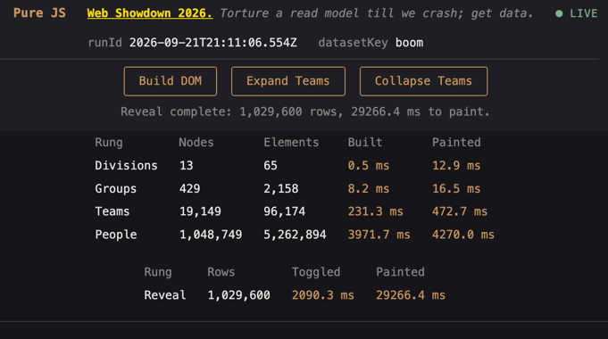
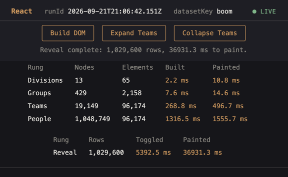
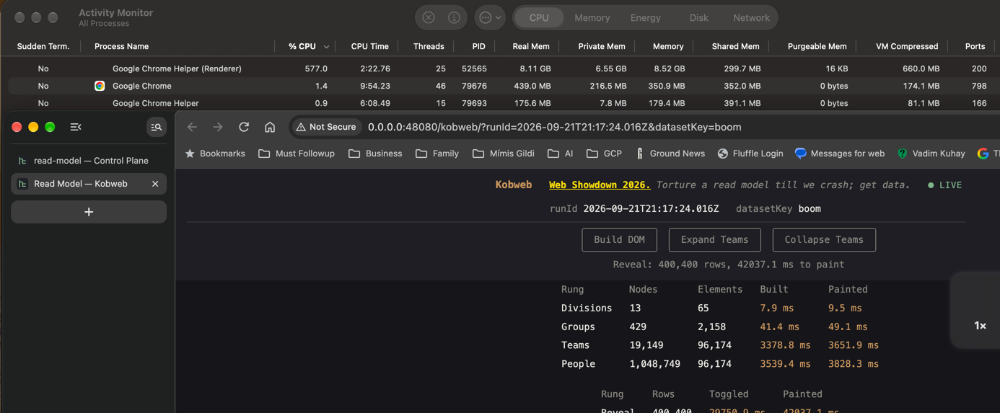
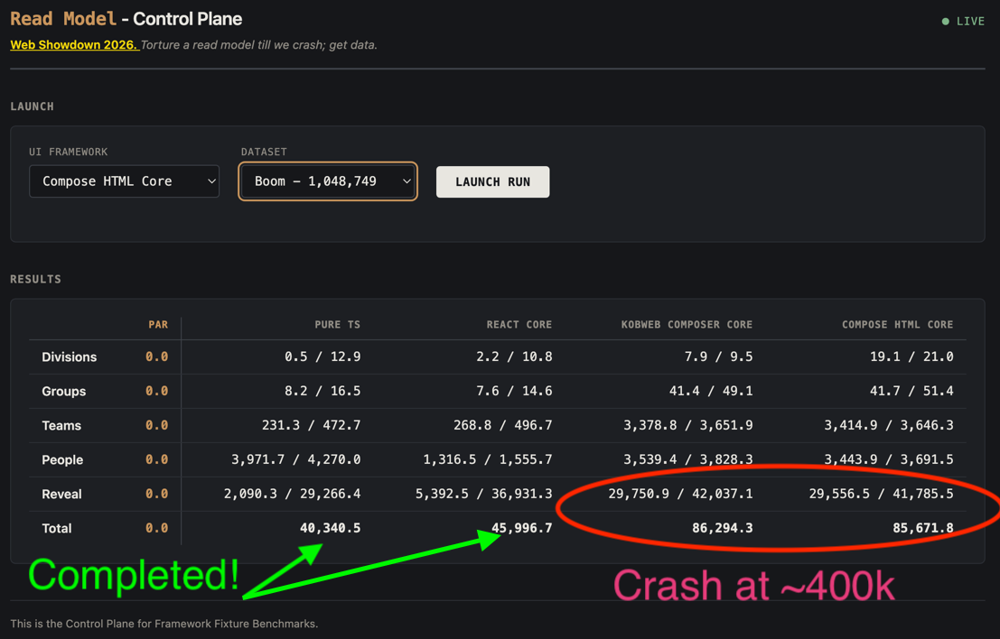
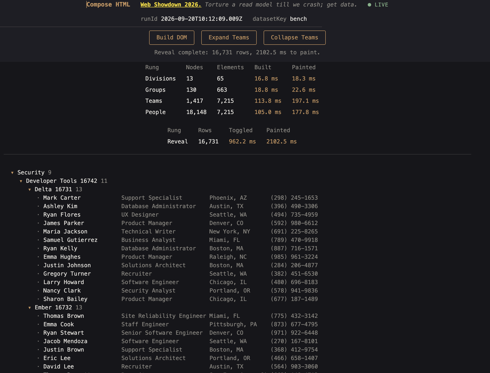
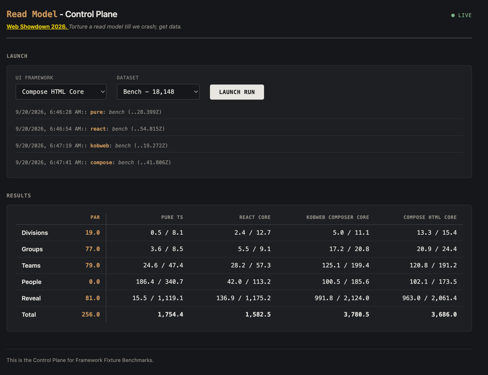
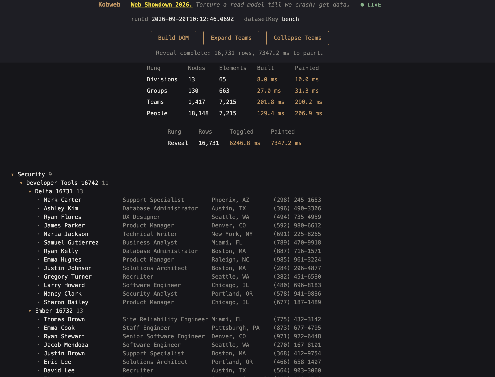
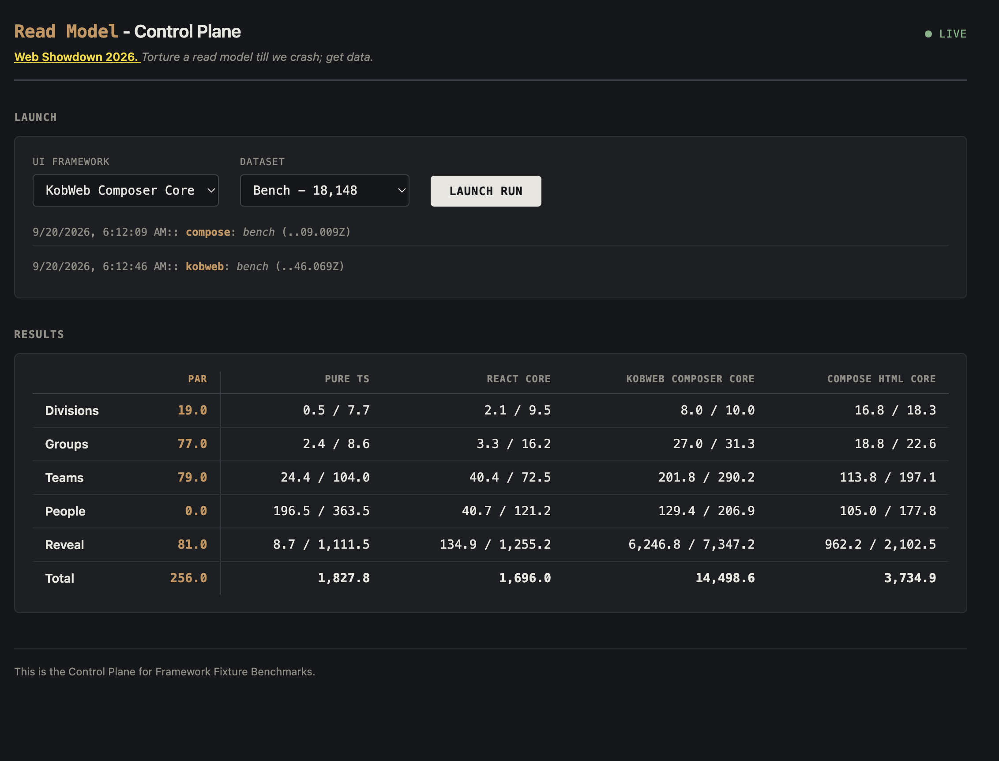

01 The premise
A brilliant Wizard once called it "What should never be — and IS!" Four beliefs get treated as absolute fact inside most IT departments:
- React is the main (or only) framework for building user interfaces.
- "Too much data" will routinely be presented to any read-model component.
- Architecture has nothing to do with data size on presentation.
- React is a dawg, everyone knows it's bad, and nobody is willing to say it.
None of that holds at a competently run company. Miss-Size is a design failure, not a constraint to engineer around. But it's a genuinely fun engineering problem to torture-test anyway — so this fixture pushes four contenders to 300,000+ browser-rendered nodes and measures exactly where each one dies.
02 The contenders
- Pure TS ETALON — the leanest possible test for where owl-stuffing always breaks the browser. Leaves built intentionally.
- React Core The leanest possible React, stripped to only sound implementation decisions. This ain't your corporate React.
- Kobweb varabyte/kobweb — a Composable client-side read model. Elegant and adorable way to build functional UI in Kotlin.
- Compose HTML Core JetBrains Compose for Web, Kotlin KMP, driven directly, no Kobweb layer. Drags the Android Jetpack Compose cake in (very consequential!).
DOM-less solutions (canvas, WASM-off-DOM) are deliberately left out — different animal, different fixture.
03 The dataset ladder
Every node count below is derived from the same formula:
divisions × (1 + groups + groups·teams + groups·teams·people)
— shape is a controlled variable: see :fixture in Kotlin.
Par is what Google's own JSON prettyprint viewer application can do presenting the same data.
CEILING, SHALLOW, and DEEP hold the
same total node count (~100k) and vary only branching shape for comparison:
balanced, many-tiny-teams, and few-huge-teams, to isolate whether performance depends on the size of
a structural edit rather than the size of the tree.
| Dataset | Nodes | Elements | Shape |
|---|---|---|---|
| smoke | 1,469 | — | sanity check |
| bench | 18,148 | 92,157 | baseline — the craziest app you'll find in production |
| stress | 50,882 | — | size ladder |
| ceiling | 102,973 | — | balanced branching — shape control |
| shallow | 100,113 | — | many tiny teams — scattered edits |
| deep | 99,983 | — | few huge teams — one giant edit |
| edge | 222,560 | — | size ladder |
| load | 320,073 | 1,608,438 | ludicrous, yet Chrome somehow survives it |
| boom (fail) | 1,048,749 | 5,262,894 | self-destruction, by design |
04 Where the DOM actually breaks
- Chrome manages 300,000 nodes / 1,200,000 elements — not the 100,000 Google socializes as the limit.
- Pure TypeScript survives the full
boomdataset: 1,048,749 nodes / 5,262,894 real DOM elements, painted in 29.3s (on a memory-uncapped Chrome). - React survives
boomtoo — same 1,048,749 nodes — but its measured Elements count reads 96,174, same as Teams: React dismounts collapsed teams instead of hiding them with CSS, so the figure only reflects what's currently expanded, not total capacity. Pure TS keeps everything mounted (toggles a CSS class), so its count accumulates all 5,262,894. - Real-life read-model UX is all comparable and equivalent at around ~1,200 nodes.
- Real-life DOM UX takes a steep dive at 20,000–30,000 nodes — not the 10,000 the React team states.
Size is the derivative of your design — not its driver.
For large data business cases: dedicated tooling, not the presentation layer.
04a Stuff for us to understand!
MEMORY is the real limit when it comes to browser applications!
The 4GB per-container Chrome factory limit causes crashes beyond the load dataset size.
To torture properly I removed A) crash detection and prevention, B) any memory limits on the container — which makes the containers
realistically go to 8-12GB while still somewhat usable. Chrome by its own architecture doesn't do well addressing more than about
13GB of active content. When forced, at about 20GB a whole new slew of bad behaviors arises, making the browser uncontrollable.
Pure TypeScript survives a million: (every leaf element painted)

React survives 1M nodes: (React and Compose dismount instead of hiding)

Kobweb and Compose HTML crash at boom with around 400k successfully revealed nodes
The plan was to catch Kobweb and Compose HTML crashing around 400k. They do. Both hit Chrome's
default crash page — no in-app error, nothing recoverable, just the tab going down — after revealing
roughly 400,400 of the 1,029,600 boom rows. Pure TS and React are the only two that
complete the full dataset.

Results: 1,048,749 nodes

04b So, is React a dawg?
js-framework-benchmark, Chrome
152 —
react-hooks-v19.2.0 vs vanillajs, both keyed:
| Operation | vanillajs | react-hooks-v19.2.0 | Slowdown |
|---|---|---|---|
| create 1,000 rows | 20.6ms (1.03×) | 23.7ms (1.19×) | 1.15× |
| replace all rows | 21.9ms (1.02×) | 30.0ms (1.40×) | 1.37× |
| partial update | 9.5ms (1.02×) | 11.2ms (1.20×) | 1.18× |
| select row | 2.5ms (1.14×) | 5.8ms (2.64×) | 2.32× |
| swap 2 rows | 10.9ms (1.03×) | 89.9ms (8.25×) | 8.25× |
| remove row | 9.7ms (1.02×) | 11.1ms (1.22×) | 1.14× |
| create 10,000 rows | 213.6ms (1.01×) | 308.7ms (1.48×) | 1.45× |
| append 1,000 rows | 23.5ms (1.01×) | 29.2ms (1.26×) | 1.24× |
| clear rows | 8.7ms (1.09×) | 17.8ms (2.20×) | 2.05× |
| weighted geometric mean | 1.04 | 1.58 | ~1.52× |
Worst case is swap rows at 8.25× — non-adjacent reconciliation cost. Across the whole suite React runs a ~52% overall slowdown (weighted geometric mean 1.58 vs vanilla's 1.04).
PICNIC Error!
We didn't see that 50%+ slowdown ourselves. Our React run finishes the full LUDICROUS boom dataset only
~14% slower in total than Pure TS (45,996.7ms vs 40,340.5ms), and ~26% slower
on the Reveal stage alone (36,931.3ms vs 29,266.4ms) — nowhere near krausest's worst case.
Sound implementation — know WHAT you are doing and WHY — no virtual-DOM misuse, no gratuitous re-renders cuz
we can — COMPETENCE matters more than the framework does. Is a lotta swap a problem? — what would a competent coder do instead?
Agreed!
The CHAIR is Dawg! Not React.
FYI, that's usually the case in engineering!
P.S. I recently watched a senior architect sort right in the page 🤔 — get my point?!
05 Design
Nine Gradle modules, one shared Fixture contract, one measurement loop driving all four frontends identically.
Module structure
Diagram 1: Gradle module dependency graph
The Fixture contract
Diagram 2: The shared Fixture interface and its implementers
Measurement flow
Diagram 3: One rung, fetch to report
06 BUGS!!: the SlotTable Google Android bottleneck
When I first benched Compose HTML I fell off my chair! Then while CPU profiling Compose HTML at load
size I found one Android function that belongs in Engineering Darwin Award Hall of Fame — a
gap-buffer Array.fill copy inside SlotTable — eating 4,259ms of a 7,302ms non-idle trace,
~58% of total self time. Every structural edit (fold/unfold) was paying an O(n) array-shift tax. (WTH!!)
The fix: androidx.compose.runtime.ComposeRuntimeFlags.isLinkBufferComposerEnabled = true,
set once before the first composition — swaps the gap buffer for a
linked-list-backed slot table.
Applied to both the :compose and :kobweb fixtures.
Read ComposeRuntimeFlags.kt
itself and check the copyright dates: the linked-list linkbuffer implementation is dated 2024,
the slower default gapbuffer one was still being touched in 2025 — and the flag ships
disabled by default, tracked against Google's own open internal bug b/485957718. The fix has existed
for a year; it's just off.
Before
4,259.35ms — 58% of trace — one function.
After
12.76ms — 0.2% — same function, same trace shape, same dataset.
Post-fix, the trace is dominated by (idle) (57.4%) and (program) (20.0%) — actual attributable
JS work, spread across boxed-long arithmetic, DOM plumbing, and the linkbuffer machinery itself, never
exceeds 1.1% for any single function.

07 Results



08 Run it yourself
git clone https://github.com/Mimis-Gildi/read-model
cd read-model
./gradlew run
Property setting launchBrowserOnRun=true will also launch your browser.
Or an environment variable will do it LAUNCH_BROWSER= ./gradlew run
This repo ships no agentic setup — mine is tuned to how I work, and yours should be tuned to how you work.
Add your own CLAUDE.md and adjust .claude/settings.json if you want an agent in here.
NOTE: gradle-node has horrible cache bugs; when in trouble ./gradlew -stop to kill a broken daemon.